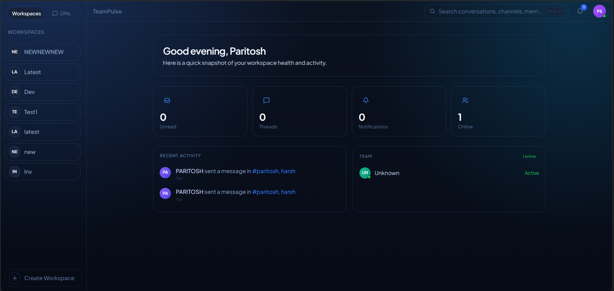

4
Projects shipped
CS + Data Science · SRM Institute · 2027
I build backend systems and ML pipelines that solve real problems.
4
Projects shipped
epoll
Non-blocking I/O · mini-redis
60+
REST endpoints · TeamPulse
94%
ML model accuracy
I am a backend-focused software engineer and CS + Data Science student at SRM Institute, graduating in 2027.
I build production-grade systems in C++, Node.js, and Python. From a custom TCP server with a non-blocking epoll event loop to a containerized EMR platform with 20+ REST endpoints and multi-tenant PostgreSQL isolation.
On the ML side, I have shipped a 5-hazard disaster prediction platform using XGBoost, LightGBM, and SHAP explainability, ingesting live NASA and weather data across 15 Indian regions.
Real-time team collaboration platform supporting 50+ concurrent WebSocket connections with sub-100ms message delivery. Features workspaces, channels, DMs, Socket.IO messaging, JWT auth, RBAC, and background schedulers.
AI-based multi-hazard disaster prediction platform covering 15 Indian regions with real-time monitoring, XGBoost + SHAP explainability, and sub-second forecast delivery via FastAPI.
Streamlit ML app achieving ~94% accuracy on 70K+ articles from the WELFake dataset. Uses TF-IDF vectorization and Logistic Regression with live URL content extraction and profile-based training.
High-performance in-memory TCP server built from scratch in C++ processing 1K+ commands/sec. Implements an epoll-based event loop, full RESP protocol parsing, and pub/sub messaging.

Production-grade Electronic Medical Records system with role-based patient management, REST APIs, JWT authentication, and Dockerized PostgreSQL backend.
2026
2024
2024